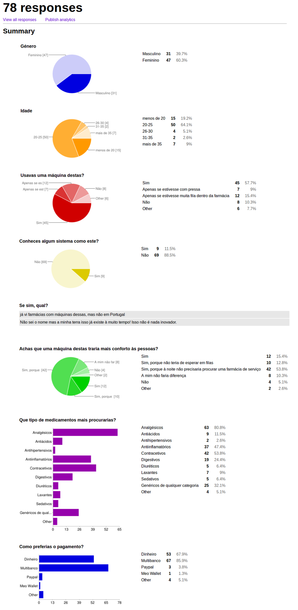

Inception #1 - V1.1
Viabilidade do projeto
Consideramos que o projeto e a possibilidade (produto) apresentada têm potencial, pelas razões que consideramos nos desafios/problemas que nos levaram a escolher este tema para trabalhar.
Com o intuito de determinar melhor se o projeto seria viável, decidimos fazer um pequeno estudo de mercado/cliente através de um pequeno inquérito que divulgámos nas redes sociais e ainda decidimos fazer algumas entrevistas a farmacêuticos.
Resultados do inquérito
Segue-se uma imagem com os dados que recolhemos do inquérito divulgado nas redes sociais.

Conclusões
Como podemos verificar pela imagem acima, foi a camada jovem (idades inferiores a 25 anos) que mais respodeu ao inquérito, representando 83.3% das respostas (isto pode dever-se ao facto de o inquérito ter sido divulgado nas redes sociais).
Pensamos que muitas pessoas iriam aderir a esta forma de adquirir medicamentos não sujeitos a receita médica, pois os que disseram que usariam de facto a máquina e os que apenas utilizariam em certas situações representam cerca de 82.1% das 78 respostas.
O facto de a grande maioria das pesssoas que responderam ao inquérito (88.5%) não conhecer nenhum sistema como este e, sendo que 82% acham que estes quiosques trariam mais conforto às pessoas (especialmente por não ter de procurar uma farmácia de serviço à noite), achamos que este sistema seria inovar e útil para as pessoas. No entanto, como se poderá notar em algumas respostas dos farmacêuticos, apesar de útil, os quiosques poderiam ser usados de forma não moderada.
Reparámos que os medicamentos com mais procura seriam os analgésicos (80.8%), contracetivos (53.8%), antiinflamatórios (47.4%) e os genéricos de qualquer categoria (32.1%).
Os métodos de pagamento preferidos seriam o multibanco (85.9%) e dinheiro (67.9%).
Resultados das entrevistas aos farmacêuticos
Ficámos a saber que, se estes quiosques já existissem, seria a própria farmácia que decidiria se queria adquirir um quiosque (e não uma entidade superior, como o Infarmed).
Perguntas que fizemos em cada farmácia:
- Compraria uma máquina destas?
- Acha que as pessoas iriam aderir?
- Que necessidades acha não seriam satisfeitas na venda ao público?
- Considera que este serviço seria útil, especialmente considerando que poderia ser mais seguro do que ter farmácias de serviço (abertas à noite, portanto) ?
- Acha que estas máquinas seriam prováveis alvos de vandalismo ou assalto?
Farmácia Nova
- Compraria dependendo das circunstâncias de negócio. Uma máquina dessas teria de passar por bastantes testes para entrar na minha farmácia, mas penso que seria uma ferramenta bastante útil para reduzir filas e para os dias em que nos encontramos fechados para as pessoas que necessitem de medicamentos simples.
- Bom, como estamos numa era totalmente tecnológica penso que sim, como qualquer criança quer experimentar o brinquedo novo. Mas as pessoas idosas, que são o nosso público alvo, penso que não. A longo prazo as pessoas iam aderindo.
- Como é obvio essa é a desvantagem (das pessoas idosas) e o problema desse sistema que me ocorre, é o facto de as receitas medicas não poderem sem levantadas nessa máquina.
- Em questão de segurança, no nosso caso acho, que não seria útil, se bem que podíamos ter sempre a oportunidade de vender algo durante a noite.
- É uma questão difícil, mas penso que sim pois era um serviço que supostamente estaria disponível a noite.
Farmácia Moderna
- Sim, compraria esse dispositivo, apesar de não gostar muito dessas tecnologias, pois estão sempre a encravar ou a dar problemas.
- Os nossos clientes são cerca de 90% de idosos por isso penso que não, pois penso eu que não têm grande interesse por isso.
- Certamente que essa máquina não teria a capacidade de aviar receitas, logo o ponto fraco de não satisfaria os clientes.
- Útil penso que seria, mas como não temos grandes clientes à noite não sei se seria útil o investimento.
- Muito bom, nem tinha pensado nisso, mas acho sinceramente que não duraria muito a ter ser assaltada ou vandalizada, e ainda o resto da farmácia só pelo simples facto de ter uma máquina dessas.
Farmácia Oudinot
- Teria que avaliar e perceber quais os medicamentos em causa porque nem todos podem estar livremente a venda, alguns nem faria sentido. Todos os medicamentos, mesmo os não sujeitos a receita médica, devem ter aconselhamento profissional.
- O utente, acho que sim.
- Faltaria precisamente o aconselhamento adequado.
- É mais seguro na ótica da farmácia. Mas ao fazer uma dispensa de um medicamento, nós temos uma responsabilidade.
- Isso de certeza, basta a intenção ser má.
Farmácia Moura
- Julgo que não. Acho que independentemente de os medicamentos serem ou não sujeitos a receita médica, deve haver um responsável para tirar dúvidas e dar as devidas precauções (ex: pílula dia seguinte).
- Alguns, talvez. À população mais jovem penso que daria algum jeito para não terem muita responsabilidade (como no exemplo da pílula dia seguinte).
- O acompanhamento por um responsável habilitado, a informação que não seria passada.
- Em termos de segurança à noite, não me parece que seja um ponto muito forte, porque há farmácias que não abrem a porta, passam só o medicamento por um pórtico na porta.
- Isso deve ser um dos pontos fracos que saltam logo à ideia de uma pessoa. Ainda para mais no caso de um medicamento que alicia por estar tão reservado.
Farmácia Central
- Depende dos produtos que fossem vendidos, porque em termos de segurança em alguns medicamentos não é viável o utente ter acesso direto.
- Sim.
- A parte da segurança, falta de informações acerca dos medicamentos, para que servem e como devem ser usados.
- Não, a posição o farmacêutico é essencial.
- Sim.
Farmácia Neto
- A compra do equipamento dependeria de acordos e protocolos.
- Talvez, porém a farmácia não apoia a automedicação.
- Não haveria aconselhamento por parte de um profissional.
- + 5. Não acho que seria seguro, pois seria um grande alvo de vandalismo e roubos, como são por exemplo as máquinas de contracetivos que se encontram no exterior das farmácias.
Conclusões
Pensamos que as farmácias comprariam um quiosque, porém não aceitariam que todos os medicamentos (mesmo sendo não sujeitos a receita médica) fossem nele vendidos.
De forma geral, os farmacêuticos concordam com a nossa visão de que as pessoas adeririam a esta forma de comprar estes medicamentos, no entanto expressaram a sua preocupação quanto à falta de acompanhamento e informação por parte de um profissional habilitado.
Percebemos que, muito provavelmente, estes quiosques seriam alvos de vandalismo e/ou de tentativas de roubo, pelo que achamos que, ao serem instalados nas farmácias, deviam ser embutidos na parede da farmácia (à semelhança dos multibancos).